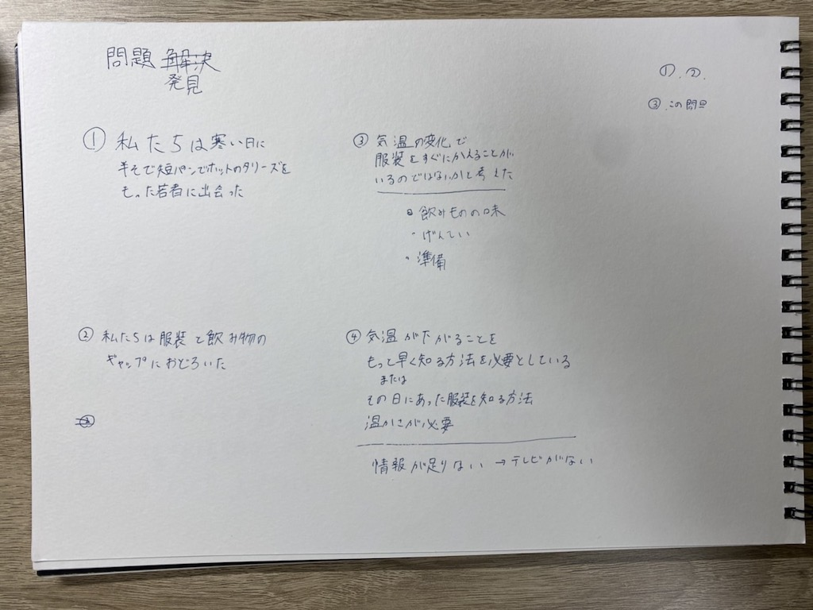
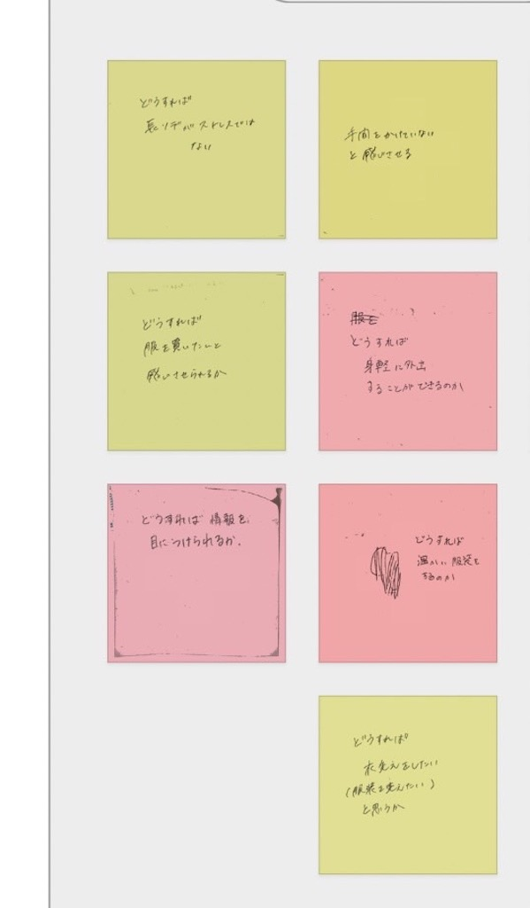
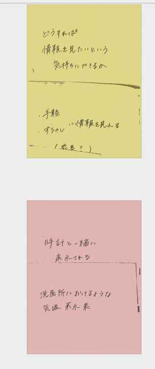
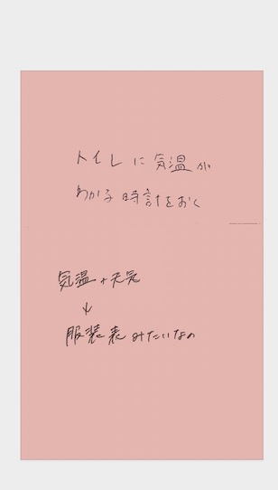
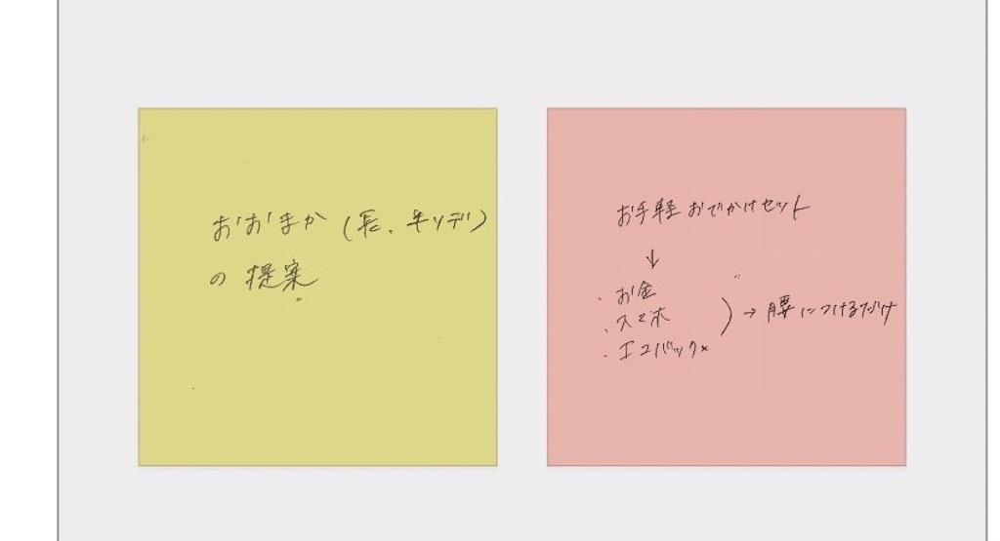
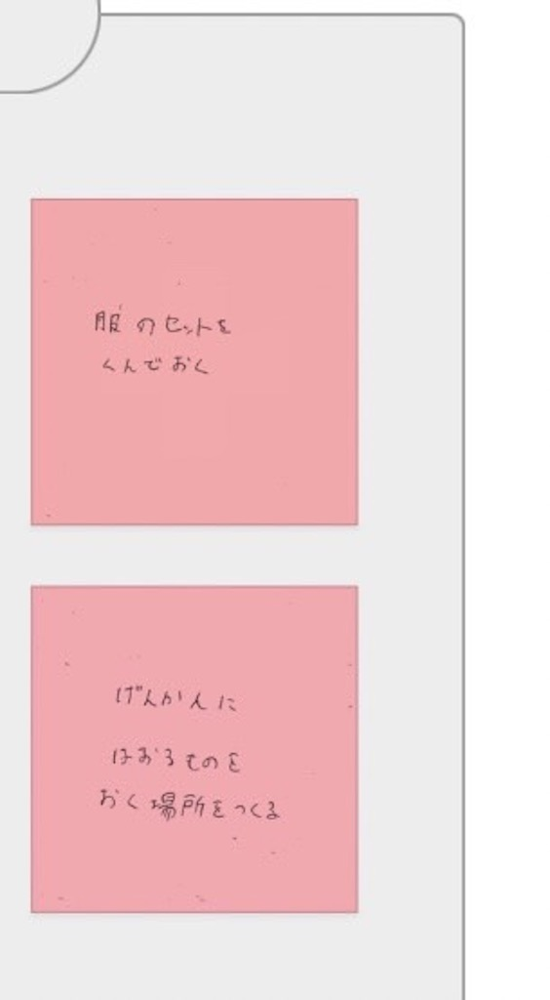
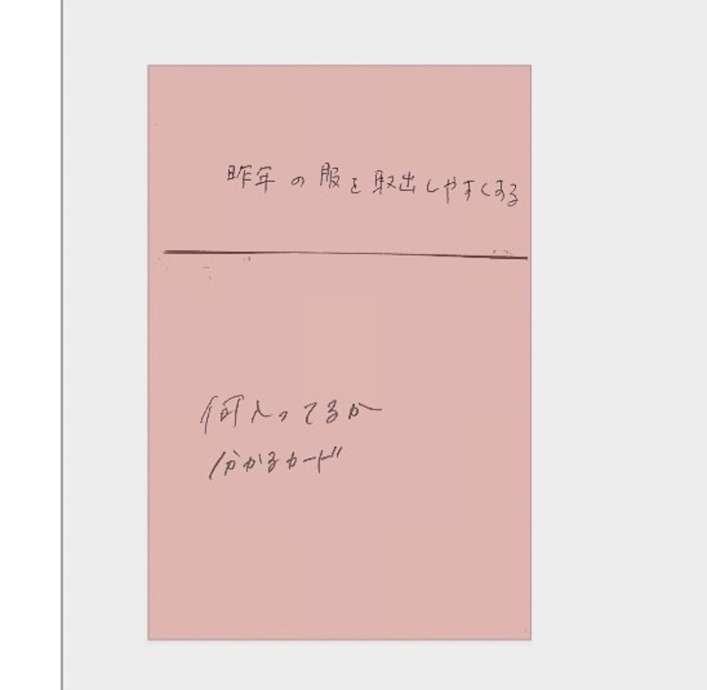
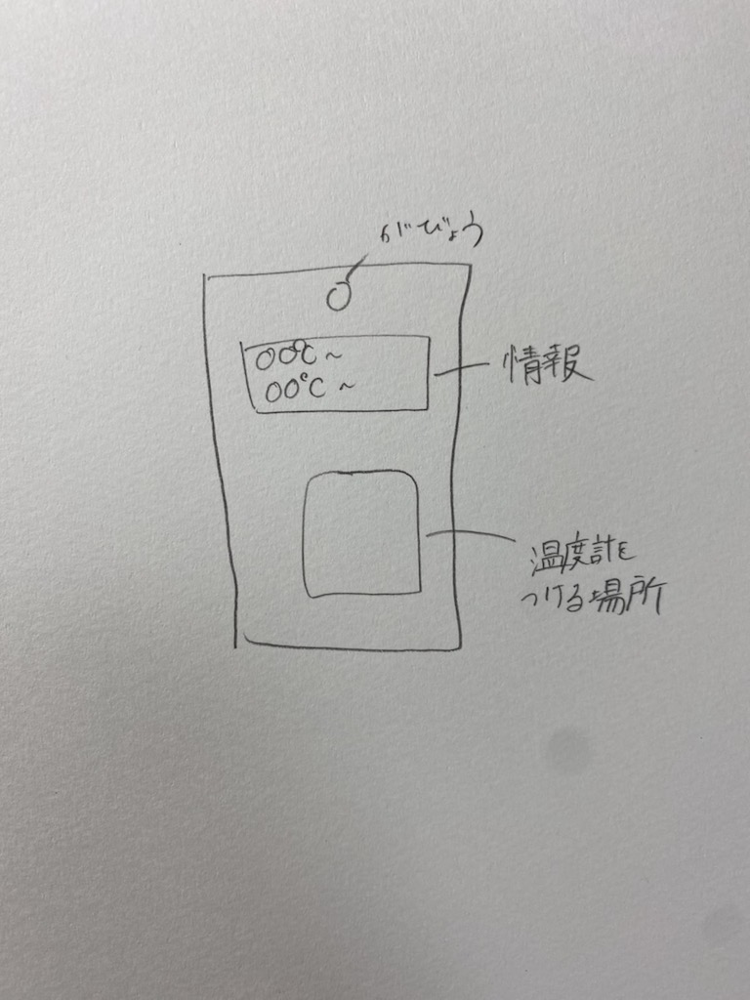
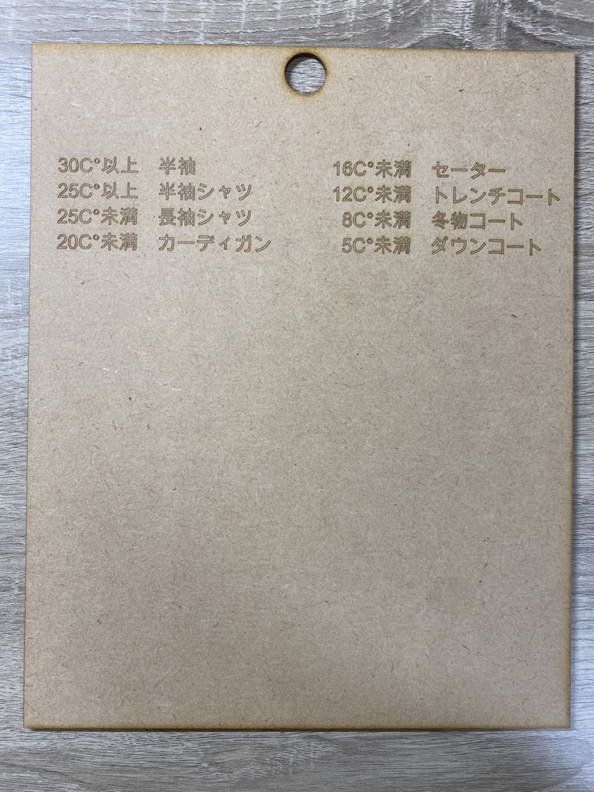

プロトタイプ&ドキュメンテーション
ピックアップした対象に関する説明
私たちがピックアップした対象は寒い日に半袖短パンでタリーズのホットのドリンクを飲んでいる若者です。
POVのスケッチの写真と説明

私たちはこの若者が寒い日の服装に驚き情報量が少なかったため服装がとても寒そうだったのではないかと考えた。
今年は寒暖差が激しく昨年の秋服や冬服を取っておいてなかった場合寒さに対応できずにこのような服装になってしまったのではないかと考えた。
なのでもう少し早く情報を手に入れる。またはその日の気温を理解し服装を調節する必要があるのではないかと考えた。
HMWの画像


どうすれば情報が目につくか

手間をかけないと感じさせる

どうすれば身軽に外出できるか

どうすれば衣替えをしたいと思うか

構想段階の手書きスケッチの写真

プロトタイプ

設計ファイル